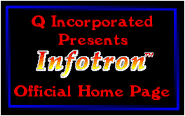

Infotron* is the first program produced by Q Incorporated, a group of three high school students. It sports
100 mind-bending levels that put you in control of Murphy, the bright red gumball who has mistakenly been
trapped in a crashed computer system! Murphy must manuver through deadly electronic sparks, bombs,
fiendish scissors and bizarre quarks, collecting Infotrons until he reaches the exit.
Infotron* will be released by the end of summer '94.
Want to know more?
- Hints and Tips
- We assure you: it is possible to make it by every single level in Infotron! Stuck? Click above.
- Version History
- Version History of Infotron, including the old alpha versions.
- Best Players
- The best Infotron players get their names gloriously posted here!
-Dave P.